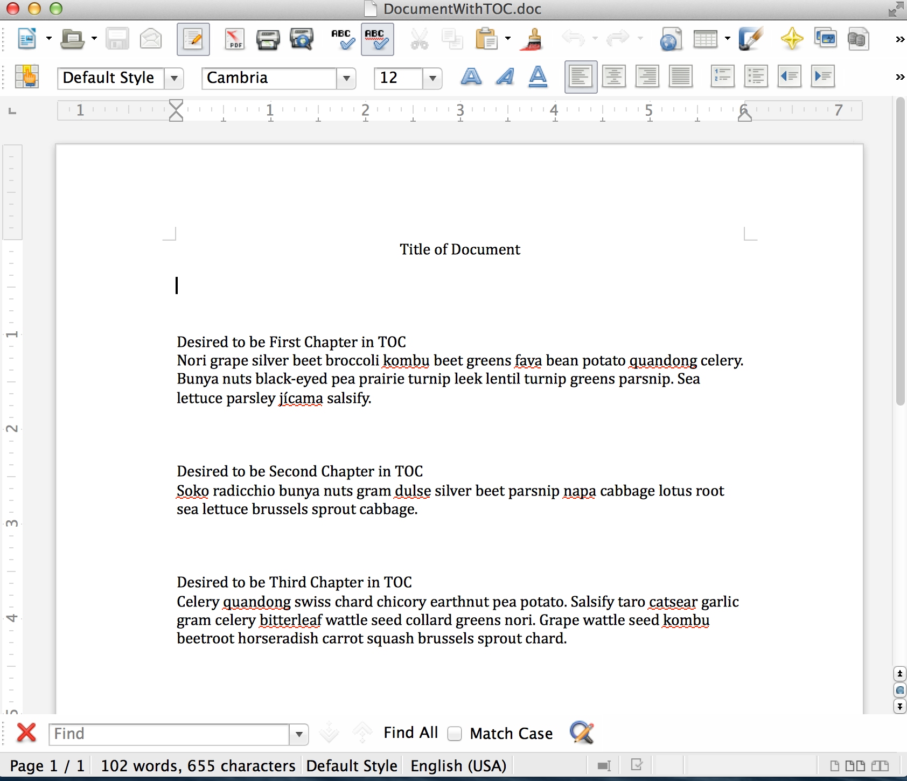
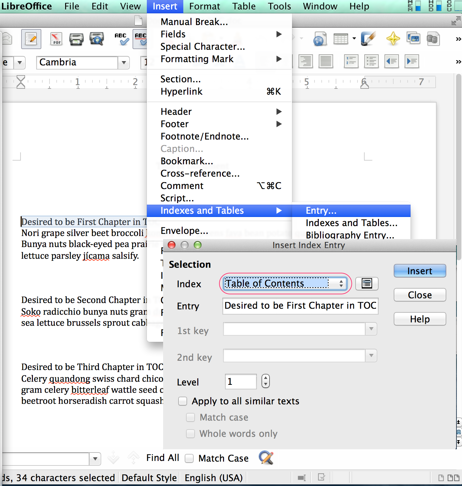
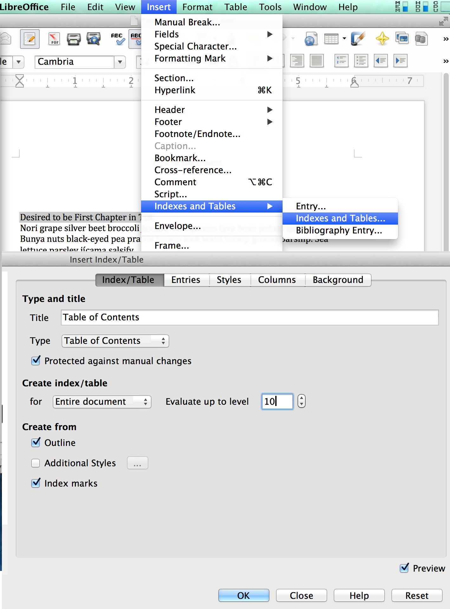
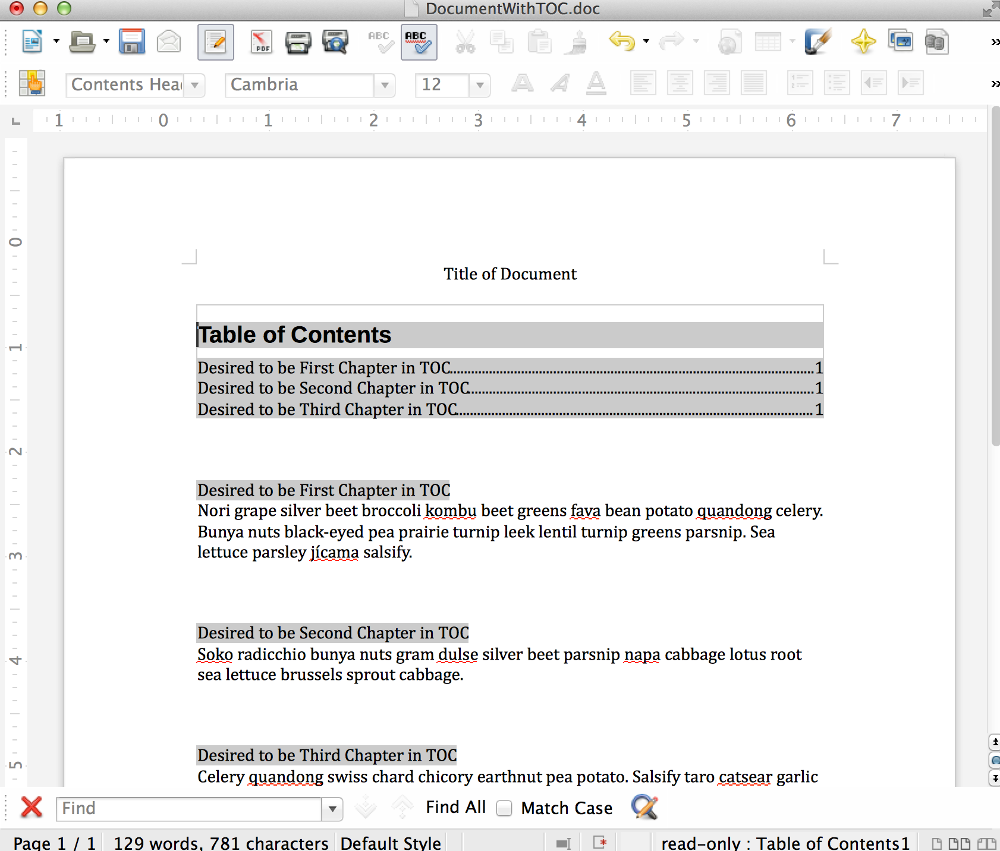

up one level
---
10:41:45
For a .doc Document in LibreOffice Writer How to Make A Table of Contents
For a .doc document in LibreOffice Writer how to make a table of contents.
First get the document. For a sample see/download this document:
../uploads/DocumentWithTOC_Original_BeforeTOC.doc
In this document there are 3 “Chapters”. I’ll tell Writer that the first line of each Chapter should be in the table of contents, and then I’ll tell Writer to insert the table of contents.
1. Here’s a screenshot of what the doc looks like before making the table of contents:

2. I’ll tell Writer that the first line of the first paragraph should be an index entry. Highlight the first line of the first paragraph, then from Writer’s top menu choose “Insert” > “Indexes and Tables” > “Entry…”. In the “Insert Index Entry” dialog that appears, for the “Index” dropdown choose “Table of Contents” and click the “Insert” button once. Then click X to close the “Insert Index Entry” window. Screenshot here:

3. Repeat this Insert-table-of-contents-index-entry for each chapter.
4. I’ll tell Writer to insert the Table of Contents. I put my cursor on a blank line at the top of the document. Choose “Insert” > “Indexes and Tables” > “Indexes and Tables…” and in the “Insert Index/Table” window that comes up, In the Indexes/Table tab make sure the Type dropdown has highlighted “Table of Contents” and click the OK button. Screenshot here:

Here is a screenshot of the result:

For a sample of the result, see/download this document:
../uploads/DocumentWithTOC.doc
*2014-12-05 edit: previously published at http://w̶i̶e̶l̶d̶l̶i̶n̶u̶x̶.̶c̶o̶m̶/?p=798
*2015-08-10 edit: edited to remove broken links, and edited whitespace to improve this post’s readability
[2020 edit: Moved to: https://i̶n̶v̶e̶s̶t̶o̶r̶w̶o̶r̶k̶e̶r̶.̶c̶o̶m̶/2014/... .html.]